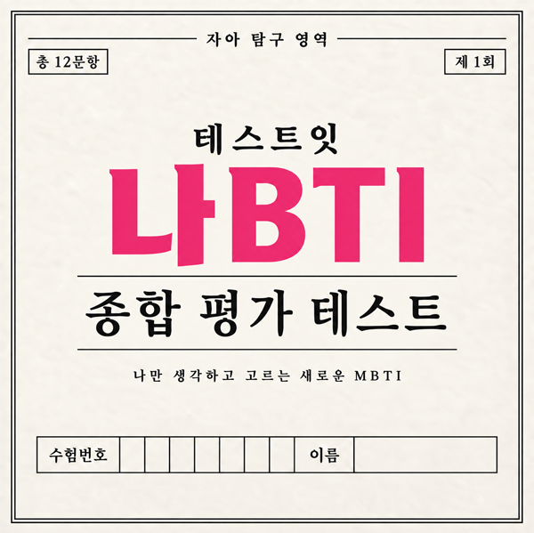

나BTI 테스트 진행중..
1 / 12
QUESTION 01
나는 대부분의 상황에서
남의 시선은 빼고 진짜 나와 가까운 쪽을 선택해주세요.
결과를 분석하고 있습니다
잠시만 기다려주세요.
테스트잇 나BTI 종합 평가 테스트
남 말고 나만 놓고 본 결과

QUESTION 01
나는 대부분의 상황에서
남의 시선은 빼고 진짜 나와 가까운 쪽을 선택해주세요.
잠시만 기다려주세요.
남 말고 나만 놓고 본 결과
이미지를 길게 눌러 저장해주세요.